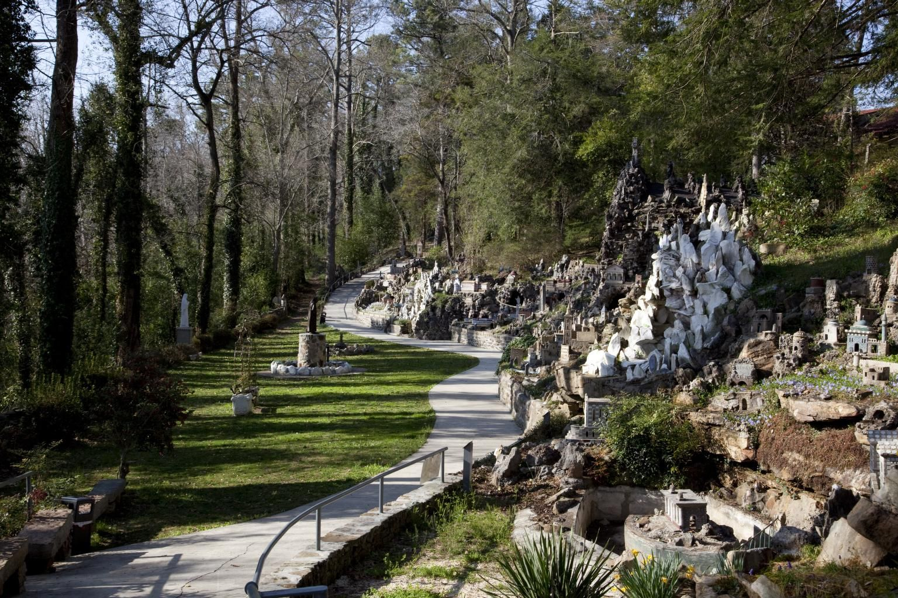
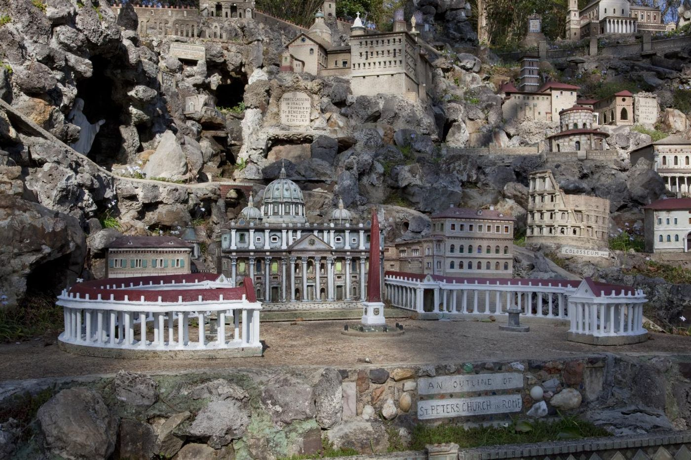
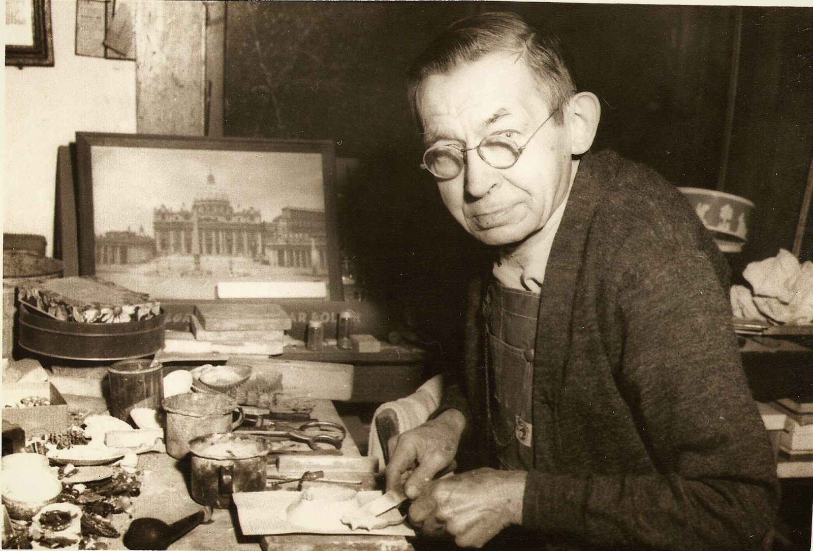
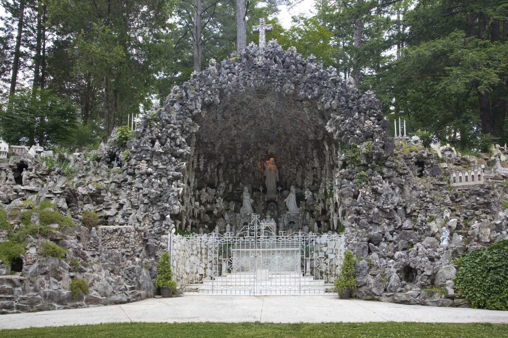

The Ave Maria Grotto
Jerusalem in Alabama
125 miniatures of the world's holy places, built by one monk from stone, cement and whatever people gave him, in four acres of an old quarry on the abbey's grounds.
For almost fifty years Br. Joseph Zoettl spent the hours left over from his work at the abbey's boilers building small churches, shrines and cities. He worked from picture postcards and books, without measurements; of all the buildings he copied, he saw only about six with his own eyes. The Grotto was dedicated to Our Lady on 17 May 1934. Today it is on the National Register of Historic Places, Alabama's first folk-art site to be listed.

What to look for
Made from what people gave him
Marbles, seashells, costume jewelry, broken plates and tiles, cold-cream jars, toilet-tank floats, old watches, bicycle reflectors. Many visitors sent him things; “he scrounged the rest.” Look closely:
the dome of St. Peter's is an old birdcage (1954); the Temple of the Fairies is built of more than a dozen cold-cream jars; the blue cross on the Guardian Angel grotto is made of ink bottles; the Tower of Thanks, topped with Irish fishing-net floats, thanks the friends who sent him his materials. His last work was the Basilica of Lourdes, finished in 1958, when he was eighty.

The builder
Br. Joseph Zoettl, OSB
He came from Bavaria as a boy of fourteen in 1892, hoping to be a priest. An injury left him hunched, and he became a lay brother instead, barely five feet tall and under a hundred pounds. He avoided visitors, tended the Grotto early and late when no one was about, and would hardly take credit for it.
He died on 15 October 1961 and is buried in the abbey cemetery, about a hundred yards north of the Grotto gift shop. Visitors are welcome at his grave.
Visiting
Plan your visit
Hours
Monday to Saturday, 9 a.m. to 5 p.m.
Sunday, 11:30 a.m. to 5 p.m.
Closed New Year's Day, Easter, the Fourth of July, Thanksgiving and Christmas.
Open seven days a week.
Admission
| Adults | $12 |
| Teens (13–17), seniors, AAA and AARP | $10 |
| Children (5–12); military, veterans and first responders | $9 |
| Children 4 and under | free |
Groups of 10 or more: adults $10, seniors $9, students $8.
Good to know
The Grotto is not wheelchair accessible. Dogs are not allowed.
1600 St. Bernard Drive S.E., Cullman, Alabama 35055
256-734-4110
Prices and hours as given on avemariagrotto.com, November 2026.
Christmas at the Grotto
The miniatures by lamplight
From late November the Grotto stays open into the evening, with the lights coming on at 5 p.m. In 2026: 19–22 and 27–29 November, 3–6 December, 10–23 December and 26–27 December. Open 9 a.m. to 9 p.m. (Sundays from noon). Horse-drawn wagon rides, Santa, live music and food trucks.

Keeping it standing
The Grotto after Br. Joseph
Concrete, shells and glass do not last forever outdoors. From 1963 to 2014 a layman, Leo Schwaiger, cared for the Grotto and added new pieces, among them the Basilica of Knock, Our Lady of Guadalupe and the Great Wall of China. As a young monk, Br. Thomas Jones learned to repair the miniatures alongside him, and the care goes on.
Admission and gift-shop sales keep the Grotto going. To help further, you can give to the Br. Joseph Zoettl Heritage Foundation or join the Grotto's volunteer gardeners.